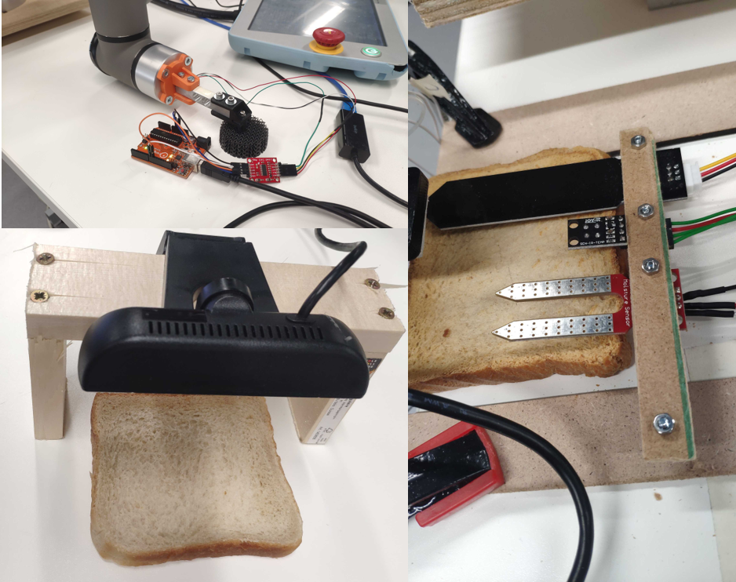
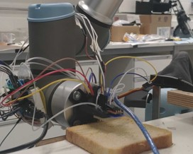
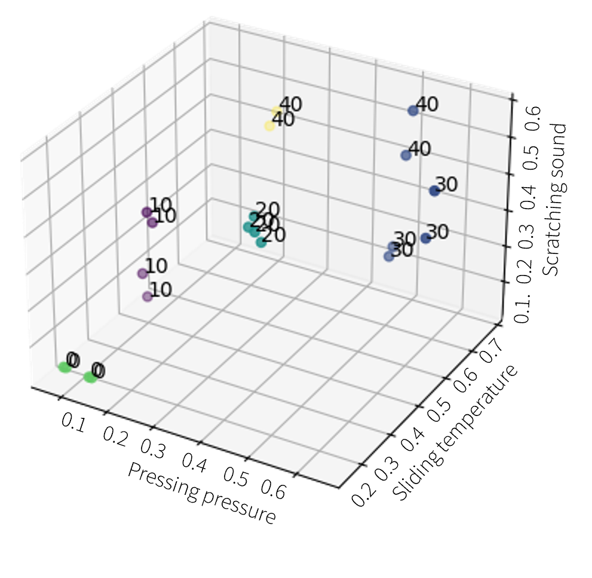

Exploration of modalities
- Stiffness, permittivity, conductivity, and temperature.
- Vision and sound features including Laplacian, FFT, and PSD.

CREATE Lab, EPFL
October-December 2023

Humans perceive doneness based on numerous variables, from smells to colors and touch. This project asks how a robot can combine several of those signals to cook the perfect meal.




Sensor used for Rapid Action Evaluation and Optimization. Paper presented at RoboSoft 2024 - DOI: 10.1109/RoboSoft60065.2024.10521945